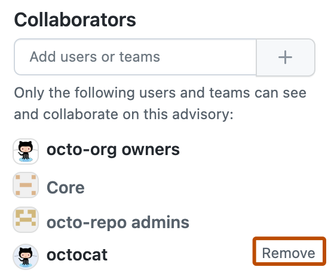

When you remove a collaborator from a repository security advisory, they lose read and write access to the security advisory's discussion and metadata.
Note
This article applies to repository-level security advisories in a public repository.
To edit a global advisory in the GitHub Advisory Database, see Editing security advisories in the GitHub Advisory Database.
If you remove a user from a repository or organization, and the user is also a collaborator on a security advisory, GitHub will automatically remove the user as a collaborator for the security advisory. This prevents any unauthorized access from ex-collaborators.
On GitHub, navigate to the main page of the repository.
Under the repository name, click the Security and quality tab. If you cannot see the " Security and quality" tab, select the dropdown menu, and then click Security and quality.
In the left sidebar, under "Reporting", click Advisories.
In the "Security Advisories" list, click the name of the security advisory you'd like to remove a collaborator from.
On the right side of the page, under "Collaborators", find the name of the user or team you'd like to remove from the security advisory.
Next to the collaborator you want to remove, click Remove.
